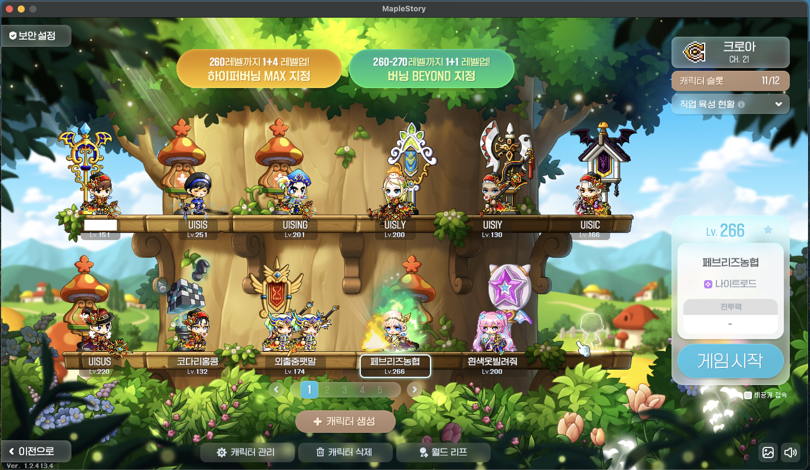
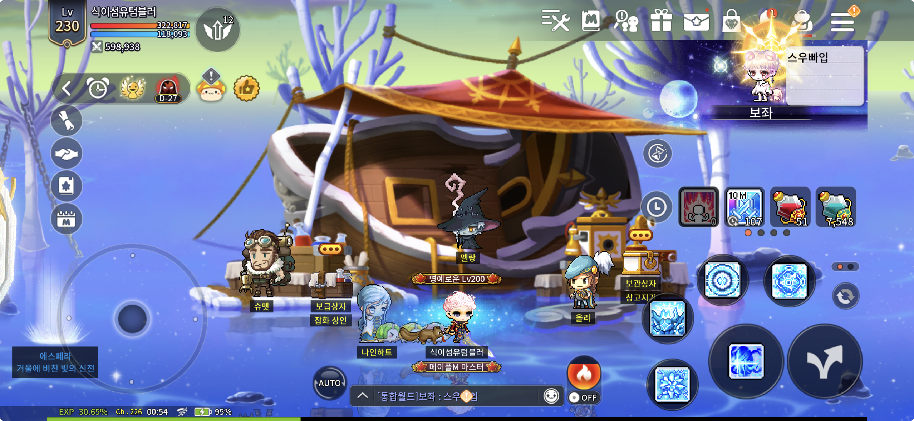
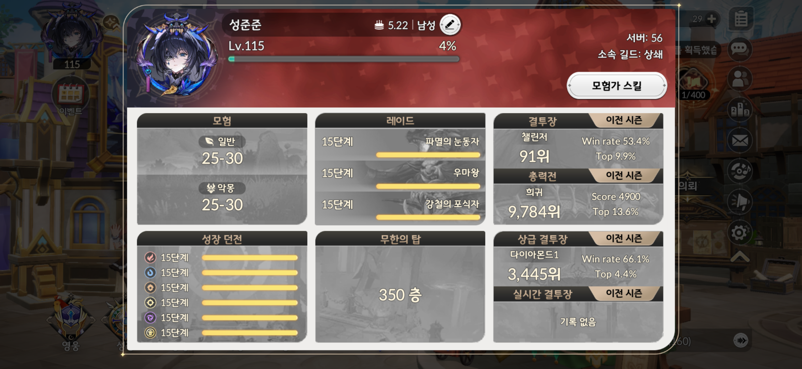
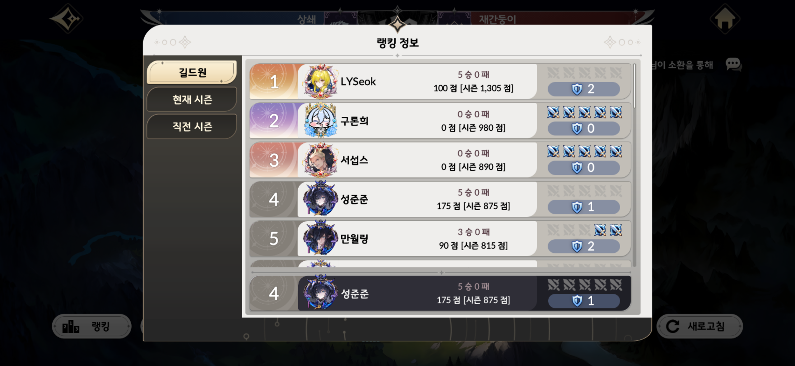
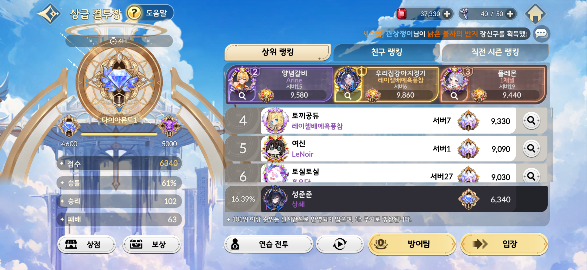
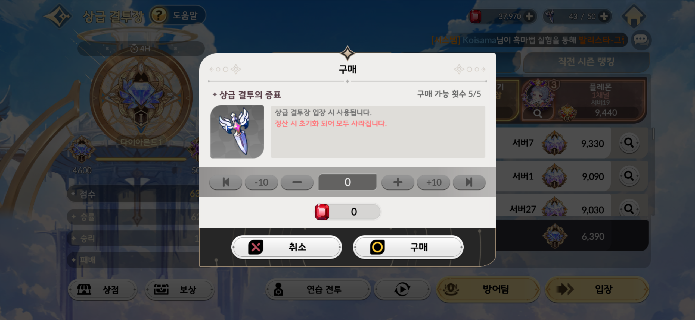
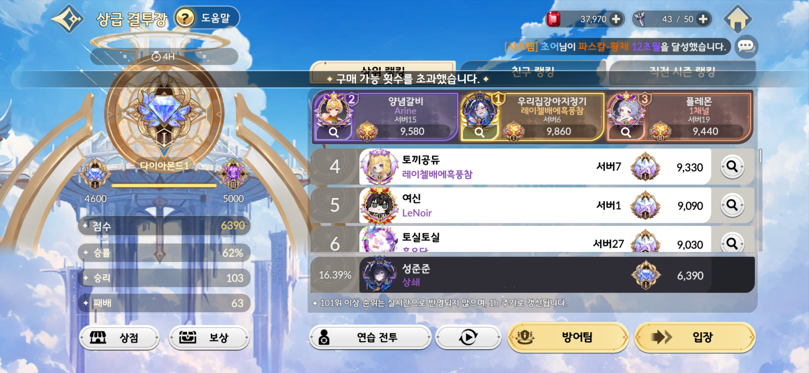
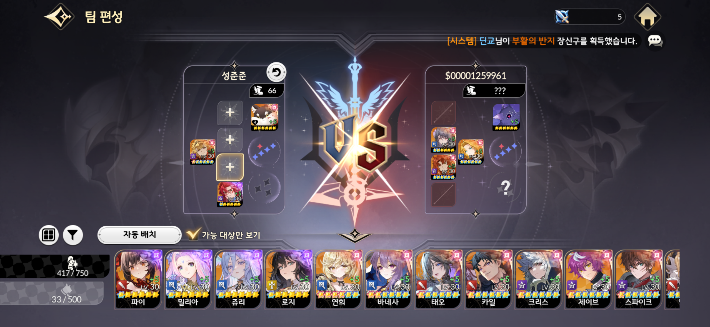

Game UX Analysis
개선 분석 및 리포트
1. Intro: 플레이어 프로필 및 게임 이해도
본 UX/UI 분석은 제가 1년 동안 단 하루도 빠짐없이 매일 접속하며 애정을 갖고 플레이해 온 '세븐나이츠 리버스(Seven Knights Rebirth)'를 바탕으로 진행합니다. 과거 원작 '세븐나이츠1'을 깊게 플레이했던 유저로서 이번 작 역시 매우 재미있게 즐기고 있으며, PVE 마스터 및 PVP 챌린저 티어(상위권) 등 랭커 수준의 높은 게임 이해도와 플레이 이력을 보유하고 있습니다. 이러한 실질적인 데이터를 바탕으로, 유저 경험에 긍정적 영향을 주는 시스템적 장치와 체감되는 페인포인트(Pain Point)를 심도 있게 분석했습니다.


2. 상급 결투장: 인지 부조화를 일으키는 버튼 피드백
Pain Point (문제점)
상급 결투장에서는 하루에 입장권을 최대 5개까지 구매할 수 있습니다. 하지만 일일 구매 가능 횟수(5회)를 모두 소진했음에도 불구하고 ‘구매 버튼’이 비활성화되지 않고 계속 클릭되는 문제가 있습니다. 유저는 버튼이 활성화되어 있기 때문에 시스템 오류로 오인하거나 계속해서 클릭을 시도하게 되며, 불필요한 조작과 유저 경험의 혼란을 야기합니다.



- 시각적 비활성화 (Disabled State 활용): 5회 구매가 완료된 시점에서 구매 버튼을 회색 처리(Dimmed)하여 직관적으로 클릭이 불가능한 상태임을 인지시킵니다. 버튼 텍스트를 '구매 완료'로 변경하는 것도 좋은 방법입니다.
- 직관적인 피드백 (Toast 팝업): 시스템 한계상 버튼을 열어두어야 한다면, 클릭 시 빈 화면이나 반응 없음이 아니라 "이미 구매를 완료했습니다"라는 짧은 토스트(Toast) 팝업을 띄워 유저에게 즉각적이고 명확한 피드백을 전달해야 합니다.
3. 길드전: 덱 구성 화면의 사용성(Usability) 한계
Pain Point (문제점)
길드전의 핵심 재미는 상대방의 덱을 분석하고 내 덱을 조합해 '카운터'를 치는 전략성에 있습니다. 이를 위해 약 50명 이상의 캐릭터 중 신중하게 선택을 해야 하는데, 현재 내 캐릭터 목록이 가로 스크롤(슬라이드)로만 제공되어 덱 구성의 시야가 좁아지고 효율성이 매우 떨어집니다.
우측의 사각형 뷰 버튼을 누르면 전체 캐릭터를 한눈에 볼 수 있지만, 이 화면을 열면 상대방의 덱 정보가 완전히 가려져버리는 치명적인 단점이 발생합니다. 결국 상대 덱을 보면서 내 캐릭터를 맞춤형으로 고르는 핵심 플레이 흐름이 끊기게 됩니다.

- 화면 분할 및 레이아웃 재배치: 상대방의 덱 리스트를 화면 상단이나 일부분인 플로팅 영역에 고정(Sticky)시키고, 하단 영역에 내 전체 캐릭터 목록(그리드 뷰)을 띄워 '상대 덱 정보 확인'과 '내 덱 구성'이 시선 이동 없이 동시에 이루어질 수 있도록 개선해야 합니다.
- 필터링 및 정렬 도입: 좁은 영역에서 가로로 끝없이 넘기는 수고를 덜기 위해 역할군(탱커/딜러/힐러 등) 및 속성 등의 퀵 필터를 상단에 배치하여, 원하는 영웅을 빠르게 찾아 드롭할 수 있는 효율적인 동선을 구축해야 합니다.
4. 몰입형 UX: 끊김 없는 인터랙션과 다이내믹한 카메라 앵글
Positive UX Analysis (긍정적 사용자 경험)
위에서 다룬 일부 불편사항에도 불구하고 제가 1년 넘게 세븐나이츠 리버스를 매일 즐기는 가장 큰 이유는, 단연코 압도적인 몰입감을 제공하는 매끄러운 화면 전환과 역동적인 카메라 무빙에 있습니다. 이러한 시각적 흐름은 단순한 미적 요소를 넘어, 플레이어의 인지와 감각을 강하게 끌어들이는 정교한 HCI 메커니즘으로 작동합니다.
- Spatial Presence 극대화: 평면적인 화면 환경의 한계를 극복하기 위해, 전환 시 카메라가 급격하게 Zoom-in 되고 앵글이 다이내믹하게 교차됩니다. 이러한 파노라마식 시점 이동은 유저가 화면 밖의 관찰자가 아닌 가상 환경과 인터페이스 '중심'에 위치하고 있다는 강렬한 Presence를 부여합니다.
- Kinesthetic Feedback 과 Flow 유지: 메뉴 화면의 전환과 완벽히 동기화된 카메라의 흐름(Camera Flow) 및 부드러운 전환 효과는, 유저 스스로가 시공간을 물리적으로 조종하고 나아가는 듯한 쾌감인 Kinesthetic Feedback을 유도합니다. 이처럼 인지적 끊김(Cognitive Friction) 없이 매끄러운 시각적 피드백 루프는 플레이어의 Flow State를 극대화 시키고 장기 리텐션을 견인하는 핵심 동인이 됩니다.